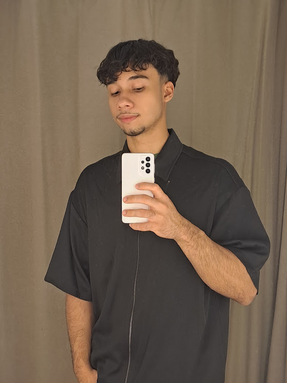

Matheus Fraga.
Desenvolvedor Full Stack & Designer
Status: Carregando status…
Sou desenvolvedor Full Stack e Designer, movido pela curiosidade e pela vontade de fazer minhas ideias acontecerem.
Um pouco de mim
Sobre mim.
Sou o Matheus Fraga, tenho 17 anos e estou construindo minha trajetória como desenvolvedor Full Stack e designer. Aprendo na prática, transformando ideias em aplicações web e explorando Front-end, Back-end e design. Gosto de criar interfaces funcionais, cuidar dos detalhes e evoluir a cada projeto.
Fora da tela, gosto de jogar basquete e CS, tomar um bom café e ouvir pagode ou trap. São momentos para descansar, recarregar as ideias e voltar aos projetos com outra perspectiva.
Da ideia à interface
01 — 04Projetos selecionados.
Sua próxima ideia começa aqui.
Tem uma ideia ou quer conversar sobre um projeto?